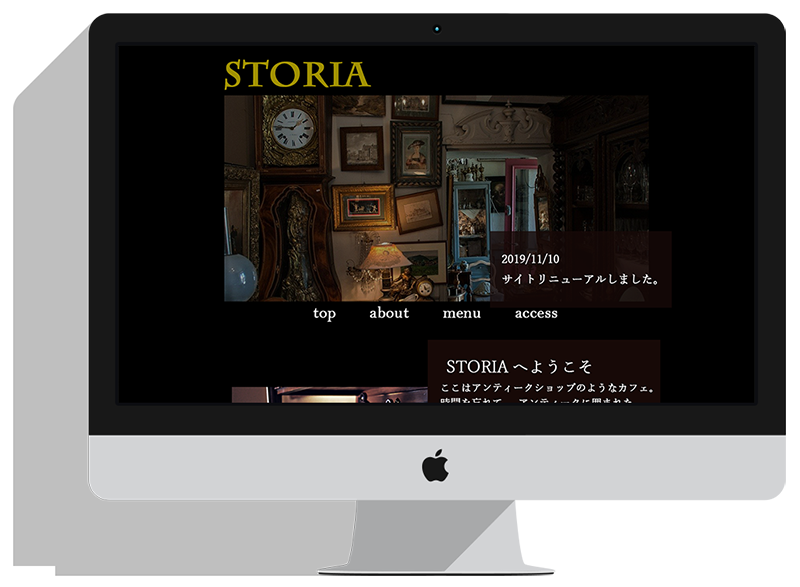

架空のアンティークカフェのサイト(ファーストビュー)
制作時期：2019年10月 制作期間:約1日間
「アンティークショップのようなカフェ」のWEBサイトです。
「アンティークショップのようなカフェ」のWEBサイトです。
ターゲット
20代～30代の男女
20代～30代の男女
こだわり
・黒背景に金、白、茶などの色を用いて古き良き高級感を
・写真なども含めて全体の色味を茶色っぽく合わせ、アンティークショップ特有のレトロな雰囲気を演出
・黒背景に金、白、茶などの色を用いて古き良き高級感を
・写真なども含めて全体の色味を茶色っぽく合わせ、アンティークショップ特有のレトロな雰囲気を演出
制作範囲
デザイン
デザイン
使用ツール
Photoshop
Photoshop